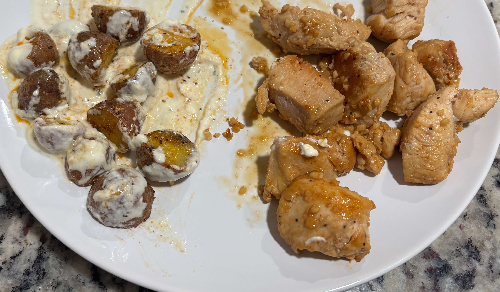

Home
Garlic Butter Chicken and Creamy Potatoes

4 servings
Ingredients
- 1.5 lbs boneless skinless chicken breast (680g), cut into 1 inch chunks
- 2 tbsp olive oil (30 ml) divided
- salt and pepper
- 3/4 tsp paprika divided
- 1/4 tsp cayenne pepper (optional)
- 3 tbsp unsalted butter (42g)
- 3 cloves minced garlic
- 2 tbsp fresh parsley chopped (optional)
- 1.5 lbs baby red or gold potatoes (680g) diced into small cubes
- 1 tsp garlic powder divided
- 1/2 cup plain greek yogurt (120g)
- 1/4 cup light cream cheese (56g)
- 1/4 cup low-fat milk (60 ml)
- 1 tbsp dijon mustard (15g)
- 1/4 tsp onion powder
Steps
- Preheat the oven to 425 degrees F. Toss the diced potatoes with 1 tbsp olive oil, 1/2 tsp salt, 1/2 tsp black pepper, 1/2 tsp garlic powder, and 1/4 tsp paprika. Spread on a baking sheet lined with parchment paper and roast for 25-30 min, flipping halfway until golden and crispy
- In a large bowl, toss the chicken pieces with 1 tbsp olive oil, 1/2 tsp salt, 1/2 tsp black pepper, 1/2 tsp paprika, and 1/4 tsp cayenne (if using)
- Heat a large skillet over medium high heat. Add the seasoned chicken and sear for 5-7 minutes until cooked through and slightly golden. Remove from the pan and set aside
- In the same skillet, lower the heat and add the 3 tbsp butter. Once melted, stir in the 3 cloves minced garlic and cook for 30 seconds until fragrant. Return chicken to the skillet and toss to coat evenly in the garlic butter. Sprinkle with fresh parsely
- In a small saucepan, combine 1/2 cup greek yogurt, 1/4 cup cream cheese, 1/4 cup milk, 1 tbsp dijon mustard, 1/2 tsp garlic powder, 1/4 tsp onion powder, 1/4 tsp salt, and 1/4 tsp black pepper. Stir over low heat until smooth and creamy. Then mix in chopped parsely
- Once the potatoes are done roasting transfer them to a large bowl and toss with the creamy sauce until well coated
- Serve the potatoes with the chicken and top with parsely